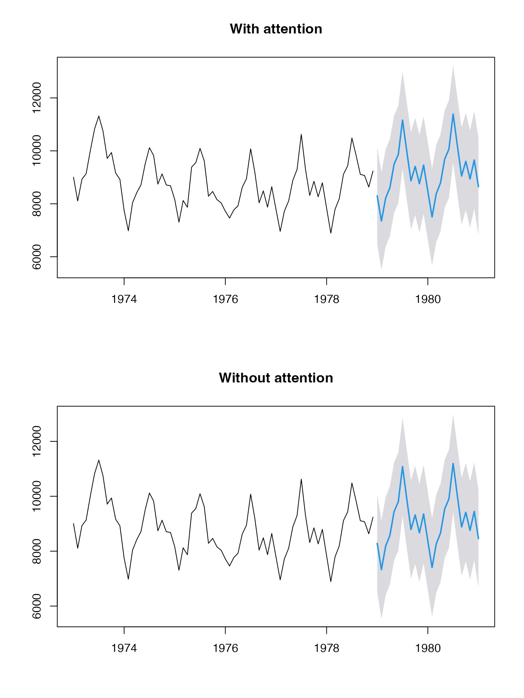
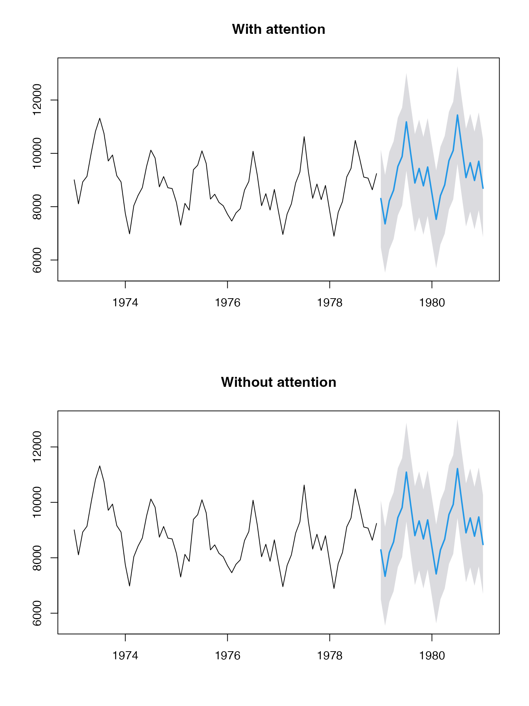

Generalized Linear Model Theta Forecast with attention - conformal uncertainty
glmthetaf-attention-conformal.RmdUSAccDeaths (method=‘adj’)
(obj <- suppressWarnings(ahead::glmthetaf(USAccDeaths, h=25L, fit_func=MASS::glm.nb, attention = TRUE, type_pi = "conformal-split")))## Registered S3 method overwritten by 'quantmod':
## method from
## as.zoo.data.frame zoo## Point Forecast Lo 95 Hi 95
## Jan 1979 8268.704 6521.060 10016.349
## Feb 1979 7309.039 5561.394 9056.684
## Mar 1979 8154.793 6407.149 9902.438
## Apr 1979 8531.014 6783.369 10278.659
## May 1979 9393.218 7645.573 11140.863
## Jun 1979 9741.994 7994.350 11489.639
## Jul 1979 11003.200 9255.555 12750.845
## Aug 1979 9835.339 8087.695 11582.984
## Sep 1979 8712.499 6964.854 10460.144
## Oct 1979 9231.334 7483.690 10978.979
## Nov 1979 8576.565 6828.920 10324.209
## Dec 1979 9249.012 7501.367 10996.656
## Jan 1980 8268.724 6521.080 10016.369
## Feb 1980 7309.057 5561.412 9056.701
## Mar 1980 8154.813 6407.168 9902.458
## Apr 1980 8531.035 6783.390 10278.679
## May 1980 9393.241 7645.596 11140.885
## Jun 1980 9742.018 7994.373 11489.662
## Jul 1980 11003.226 9255.582 12750.871
## Aug 1980 9835.363 8087.718 11583.007
## Sep 1980 8712.520 6964.875 10460.165
## Oct 1980 9231.357 7483.712 10979.001
## Nov 1980 8576.585 6828.941 10324.230
## Dec 1980 9249.034 7501.389 10996.679
## Jan 1981 8268.744 6521.100 10016.389
plot(obj)
(obj <- suppressWarnings(ahead::glmthetaf(USAccDeaths, h=25L, fit_func=stats::glm, attention = TRUE, type_pi = "conformal-split")))## Point Forecast Lo 95 Hi 95
## Jan 1979 8302.413 6467.099 10137.728
## Feb 1979 7351.481 5516.167 9186.796
## Mar 1979 8216.541 6381.227 10051.856
## Apr 1979 8610.673 6775.358 10445.987
## May 1979 9497.514 7662.199 11332.829
## Jun 1979 9867.368 8032.054 11702.683
## Jul 1979 11164.241 9328.926 12999.555
## Aug 1979 9996.663 8161.348 11831.978
## Sep 1979 8870.800 7035.485 10706.115
## Oct 1979 9415.376 7580.061 11250.691
## Nov 1979 8762.711 6927.396 10598.026
## Dec 1979 9466.102 7630.787 11301.416
## Jan 1980 8477.423 6642.109 10312.738
## Feb 1980 7506.456 5671.142 9341.771
## Mar 1980 8389.474 6554.159 10224.788
## Apr 1980 8791.607 6956.292 10626.922
## May 1980 9696.760 7861.445 11532.074
## Jun 1980 10074.035 8238.721 11909.350
## Jul 1980 11397.687 9562.373 13233.002
## Aug 1980 10205.351 8370.036 12040.666
## Sep 1980 9055.678 7220.363 10890.993
## Oct 1980 9611.277 7775.962 11446.591
## Nov 1980 8944.726 7109.412 10780.041
## Dec 1980 9662.396 7827.082 11497.711
## Jan 1981 8652.918 6817.603 10488.233
plot(obj)
(obj <- suppressWarnings(ahead::glmthetaf(USAccDeaths, h=25L, fit_func=MASS::rlm, attention = TRUE, type_pi = "conformal-split")))## Point Forecast Lo 95 Hi 95
## Jan 1979 8306.510 6476.524 10136.496
## Feb 1979 7356.652 5526.666 9186.638
## Mar 1979 8224.070 6394.084 10054.057
## Apr 1979 8620.394 6790.407 10450.380
## May 1979 9510.252 7680.265 11340.238
## Jun 1979 9882.692 8052.705 11712.678
## Jul 1979 11183.937 9353.951 13013.923
## Aug 1979 10016.407 8186.421 11846.393
## Sep 1979 8890.185 7060.199 10720.172
## Oct 1979 9437.926 7607.940 11267.912
## Nov 1979 8785.530 6955.544 10615.517
## Dec 1979 9492.727 7662.741 11322.713
## Jan 1980 8503.030 6673.044 10333.017
## Feb 1980 7530.687 5700.700 9360.673
## Mar 1980 8418.288 6588.302 10248.274
## Apr 1980 8823.613 6993.627 10653.599
## May 1980 9734.051 7904.065 11564.037
## Jun 1980 10114.839 8284.852 11944.825
## Jul 1980 11446.175 9616.189 13276.161
## Aug 1980 10250.839 8420.853 12080.826
## Sep 1980 9097.875 7267.888 10927.861
## Oct 1980 9658.000 7828.014 11487.986
## Nov 1980 8990.006 7160.020 10819.993
## Dec 1980 9713.243 7883.257 11543.229
## Jan 1981 8700.178 6870.191 10530.164
plot(obj)
(obj <- suppressWarnings(ahead::glmthetaf(USAccDeaths, h=25L, fit_func=MASS::lqs, attention = TRUE, type_pi = "conformal-split")))## Point Forecast Lo 95 Hi 95
## Jan 1979 8294.409 6468.950 10119.868
## Feb 1979 7341.387 5515.928 9166.846
## Mar 1979 8201.847 6376.387 10027.306
## Apr 1979 8591.704 6766.245 10417.164
## May 1979 9472.666 7647.206 11298.125
## Jun 1979 9837.483 8012.023 11662.942
## Jul 1979 11125.835 9300.375 12951.294
## Aug 1979 9958.172 8132.713 11783.631
## Sep 1979 8833.014 7007.555 10658.473
## Oct 1979 9371.428 7545.969 11196.888
## Nov 1979 8718.244 6892.785 10543.704
## Dec 1979 9414.225 7588.766 11239.685
## Jan 1980 8427.536 6602.077 10252.995
## Feb 1980 7459.256 5633.797 9284.715
## Mar 1980 8333.349 6507.890 10158.808
## Apr 1980 8729.269 6903.810 10554.728
## May 1980 9624.130 7798.671 11449.589
## Jun 1980 9994.569 8169.110 11820.029
## Jul 1980 11303.258 9477.799 13128.717
## Aug 1980 10116.764 8291.305 11942.224
## Sep 1980 8973.503 7148.043 10798.962
## Oct 1980 9520.285 7694.826 11345.744
## Nov 1980 8856.545 7031.086 10682.004
## Dec 1980 9563.372 7737.913 11388.831
## Jan 1981 8560.877 6735.418 10386.336
plot(obj)
(obj <- suppressWarnings(ahead::glmthetaf(USAccDeaths, h=25L, fit_func=stats::lm, attention = TRUE, type_pi = "conformal-split")))## Point Forecast Lo 95 Hi 95
## Jan 1979 8302.413 6467.099 10137.728
## Feb 1979 7351.481 5516.167 9186.796
## Mar 1979 8216.541 6381.227 10051.856
## Apr 1979 8610.673 6775.358 10445.987
## May 1979 9497.514 7662.199 11332.829
## Jun 1979 9867.368 8032.054 11702.683
## Jul 1979 11164.241 9328.926 12999.555
## Aug 1979 9996.663 8161.348 11831.978
## Sep 1979 8870.800 7035.485 10706.115
## Oct 1979 9415.376 7580.061 11250.691
## Nov 1979 8762.711 6927.396 10598.026
## Dec 1979 9466.102 7630.787 11301.416
## Jan 1980 8477.423 6642.109 10312.738
## Feb 1980 7506.456 5671.142 9341.771
## Mar 1980 8389.474 6554.159 10224.788
## Apr 1980 8791.607 6956.292 10626.922
## May 1980 9696.760 7861.445 11532.074
## Jun 1980 10074.035 8238.721 11909.350
## Jul 1980 11397.687 9562.373 13233.002
## Aug 1980 10205.351 8370.036 12040.666
## Sep 1980 9055.678 7220.363 10890.993
## Oct 1980 9611.277 7775.962 11446.591
## Nov 1980 8944.726 7109.412 10780.041
## Dec 1980 9662.396 7827.082 11497.711
## Jan 1981 8652.918 6817.603 10488.233
plot(obj)
(obj <- suppressWarnings(ahead::glmthetaf(USAccDeaths, h=25L, fit_func=gam::gam, attention = TRUE, type_pi = "conformal-split")))## Point Forecast Lo 95 Hi 95
## Jan 1979 8302.413 6467.099 10137.728
## Feb 1979 7351.481 5516.167 9186.796
## Mar 1979 8216.541 6381.227 10051.856
## Apr 1979 8610.673 6775.358 10445.987
## May 1979 9497.514 7662.199 11332.829
## Jun 1979 9867.368 8032.054 11702.683
## Jul 1979 11164.241 9328.926 12999.555
## Aug 1979 9996.663 8161.348 11831.978
## Sep 1979 8870.800 7035.485 10706.115
## Oct 1979 9415.376 7580.061 11250.691
## Nov 1979 8762.711 6927.396 10598.026
## Dec 1979 9466.102 7630.787 11301.416
## Jan 1980 8477.423 6642.109 10312.738
## Feb 1980 7506.456 5671.142 9341.771
## Mar 1980 8389.474 6554.159 10224.788
## Apr 1980 8791.607 6956.292 10626.922
## May 1980 9696.760 7861.445 11532.074
## Jun 1980 10074.035 8238.721 11909.350
## Jul 1980 11397.687 9562.373 13233.002
## Aug 1980 10205.351 8370.036 12040.666
## Sep 1980 9055.678 7220.363 10890.993
## Oct 1980 9611.277 7775.962 11446.591
## Nov 1980 8944.726 7109.412 10780.041
## Dec 1980 9662.396 7827.082 11497.711
## Jan 1981 8652.918 6817.603 10488.233
plot(obj)
(obj <- suppressWarnings(ahead::glmthetaf(USAccDeaths, h=25L, fit_func=quantreg::rq, attention = TRUE, type_pi = "conformal-split")))## Point Forecast Lo 95 Hi 95
## Jan 1979 8303.330 6491.824 10114.836
## Feb 1979 7352.638 5541.132 9164.144
## Mar 1979 8218.225 6406.719 10029.731
## Apr 1979 8612.846 6801.340 10424.353
## May 1979 9500.362 7688.856 11311.868
## Jun 1979 9870.794 8059.288 11682.301
## Jul 1979 11168.644 9357.138 12980.151
## Aug 1979 10001.077 8189.571 11812.583
## Sep 1979 8875.134 7063.628 10686.640
## Oct 1979 9420.417 7608.911 11231.923
## Nov 1979 8767.812 6956.306 10579.318
## Dec 1979 9472.053 7660.547 11283.559
## Jan 1980 8483.147 6671.641 10294.653
## Feb 1980 7511.872 5700.366 9323.379
## Mar 1980 8395.914 6584.408 10207.420
## Apr 1980 8798.761 6987.255 10610.267
## May 1980 9705.095 7893.588 11516.601
## Jun 1980 10083.155 8271.649 11894.662
## Jul 1980 11408.525 9597.018 13220.031
## Aug 1980 10215.518 8404.012 12027.024
## Sep 1980 9065.109 7253.603 10876.616
## Oct 1980 9621.720 7810.214 11433.226
## Nov 1980 8954.847 7143.341 10766.353
## Dec 1980 9673.761 7862.255 11485.268
## Jan 1981 8663.481 6851.975 10474.988
plot(obj)AirPassengers (method=‘adj’)
(obj <- suppressWarnings(ahead::glmthetaf(AirPassengers, h=25L, fit_func=MASS::glm.nb, attention = TRUE, type_pi = "conformal-split")))## Point Forecast Lo 95 Hi 95
## Jan 1961 441.8646 312.5514 571.1778
## Feb 1961 415.3320 286.0188 544.6452
## Mar 1961 470.6940 341.3808 600.0072
## Apr 1961 466.2535 336.9403 595.5667
## May 1961 477.9190 348.6059 607.2322
## Jun 1961 552.5238 423.2106 681.8370
## Jul 1961 618.1915 488.8783 747.5046
## Aug 1961 611.8559 482.5427 741.1691
## Sep 1961 517.8437 388.5305 647.1569
## Oct 1961 448.5760 319.2628 577.8892
## Nov 1961 389.6927 260.3795 519.0059
## Dec 1961 432.9815 303.6683 562.2947
## Jan 1962 441.9628 312.6497 571.2760
## Feb 1962 415.4230 286.1098 544.7362
## Mar 1962 470.7965 341.4833 600.1097
## Apr 1962 466.3545 337.0413 595.6677
## May 1962 478.0221 348.7089 607.3353
## Jun 1962 552.6424 423.3292 681.9556
## Jul 1962 618.3236 489.0104 747.6368
## Aug 1962 611.9862 482.6730 741.2994
## Sep 1962 517.9536 388.6404 647.2668
## Oct 1962 448.6709 319.3577 577.9841
## Nov 1962 389.7749 260.4617 519.0881
## Dec 1962 433.0726 303.7594 562.3857
## Jan 1963 442.0555 312.7424 571.3687
plot(obj)
(obj <- suppressWarnings(ahead::glmthetaf(AirPassengers, h=25L, fit_func=stats::glm, attention = TRUE, type_pi = "conformal-split")))## Point Forecast Lo 95 Hi 95
## Jan 1961 446.0979 393.9848 498.2109
## Feb 1961 422.5983 370.4853 474.7114
## Mar 1961 482.3441 430.2310 534.4572
## Apr 1961 481.1587 429.0456 533.2717
## May 1961 496.6310 444.5179 548.7440
## Jun 1961 578.1089 525.9958 630.2220
## Jul 1961 651.2199 599.1068 703.3330
## Aug 1961 648.8849 596.7719 700.9980
## Sep 1961 552.8407 500.7276 604.9537
## Oct 1961 482.0479 429.9349 534.1610
## Nov 1961 421.5032 369.3901 473.6162
## Dec 1961 471.3516 419.2385 523.4647
## Jan 1962 484.2088 432.0957 536.3218
## Feb 1962 458.0197 405.9066 510.1328
## Mar 1962 522.3366 470.2235 574.4496
## Apr 1962 520.6371 468.5240 572.7501
## May 1962 536.9676 484.8545 589.0806
## Jun 1962 624.6060 572.4929 676.7190
## Jul 1962 703.1069 650.9939 755.2200
## Aug 1962 700.1221 648.0090 752.2351
## Sep 1962 596.1197 544.0066 648.2328
## Oct 1962 519.4765 467.3634 571.5895
## Nov 1962 453.9761 401.8631 506.0892
## Dec 1962 507.3965 455.2834 559.5096
## Jan 1963 520.9771 468.8640 573.0901
plot(obj)
(obj <- suppressWarnings(ahead::glmthetaf(AirPassengers, h=25L, fit_func=MASS::rlm, attention = TRUE, type_pi = "conformal-split")))## Point Forecast Lo 95 Hi 95
## Jan 1961 446.1180 394.4120 497.8241
## Feb 1961 422.6331 370.9271 474.3391
## Mar 1961 482.4001 430.6941 534.1061
## Apr 1961 481.2305 429.5245 532.9366
## May 1961 496.7214 445.0154 548.4274
## Jun 1961 578.2328 526.5268 629.9388
## Jul 1961 651.3801 599.6741 703.0861
## Aug 1961 649.0647 597.3587 700.7708
## Sep 1961 553.0108 501.3048 604.7169
## Oct 1961 482.2108 430.5048 533.9169
## Nov 1961 421.6581 369.9521 473.3641
## Dec 1961 471.5387 419.8326 523.2447
## Jan 1962 484.4149 432.7088 536.1209
## Feb 1962 458.2277 406.5217 509.9337
## Mar 1962 522.5884 470.8824 574.2944
## Apr 1962 520.9025 469.1965 572.6085
## May 1962 537.2561 485.5501 588.9621
## Jun 1962 624.9586 573.2525 676.6646
## Jul 1962 703.5228 651.8168 755.2288
## Aug 1962 700.5549 648.8489 752.2609
## Sep 1962 596.5041 544.7981 648.2101
## Oct 1962 519.8252 468.1192 571.5312
## Nov 1962 454.2928 402.5868 505.9988
## Dec 1962 507.7638 456.0577 559.4698
## Jan 1963 521.3677 469.6617 573.0738
plot(obj)
(obj <- suppressWarnings(ahead::glmthetaf(AirPassengers, h=25L, fit_func=stats::lm, attention = TRUE, type_pi = "conformal-split")))## Point Forecast Lo 95 Hi 95
## Jan 1961 446.0979 393.9848 498.2109
## Feb 1961 422.5983 370.4853 474.7114
## Mar 1961 482.3441 430.2310 534.4572
## Apr 1961 481.1587 429.0456 533.2717
## May 1961 496.6310 444.5179 548.7440
## Jun 1961 578.1089 525.9958 630.2220
## Jul 1961 651.2199 599.1068 703.3330
## Aug 1961 648.8849 596.7719 700.9980
## Sep 1961 552.8407 500.7276 604.9537
## Oct 1961 482.0479 429.9349 534.1610
## Nov 1961 421.5032 369.3901 473.6162
## Dec 1961 471.3516 419.2385 523.4647
## Jan 1962 484.2088 432.0957 536.3218
## Feb 1962 458.0197 405.9066 510.1328
## Mar 1962 522.3366 470.2235 574.4496
## Apr 1962 520.6371 468.5240 572.7501
## May 1962 536.9676 484.8545 589.0806
## Jun 1962 624.6060 572.4929 676.7190
## Jul 1962 703.1069 650.9939 755.2200
## Aug 1962 700.1221 648.0090 752.2351
## Sep 1962 596.1197 544.0066 648.2328
## Oct 1962 519.4765 467.3634 571.5895
## Nov 1962 453.9761 401.8631 506.0892
## Dec 1962 507.3965 455.2834 559.5096
## Jan 1963 520.9771 468.8640 573.0901
plot(obj)
(obj <- suppressWarnings(ahead::glmthetaf(AirPassengers, h=25L, fit_func=MASS::lqs, attention = TRUE, type_pi = "conformal-split")))## Point Forecast Lo 95 Hi 95
## Jan 1961 446.1852 395.4242 496.9463
## Feb 1961 422.7491 371.9880 473.5102
## Mar 1961 482.5868 431.8257 533.3479
## Apr 1961 481.4701 430.7091 532.2312
## May 1961 497.0229 446.2618 547.7840
## Jun 1961 578.6459 527.8848 629.4070
## Jul 1961 651.9143 601.1532 702.6754
## Aug 1961 649.6645 598.9034 700.4256
## Sep 1961 553.5783 502.8173 604.3394
## Oct 1961 482.7542 431.9931 533.5152
## Nov 1961 422.1749 371.4138 472.9360
## Dec 1961 472.1625 421.4014 522.9236
## Jan 1962 485.1023 434.3412 535.8633
## Feb 1962 458.9213 408.1602 509.6824
## Mar 1962 523.4283 472.6673 574.1894
## Apr 1962 521.7879 471.0268 572.5490
## May 1962 538.2184 487.4574 588.9795
## Jun 1962 626.1347 575.3736 676.8957
## Jul 1962 704.9101 654.1490 755.6711
## Aug 1962 701.9989 651.2378 752.7599
## Sep 1962 597.7865 547.0254 648.5476
## Oct 1962 520.9886 470.2275 571.7497
## Nov 1962 455.3495 404.5884 506.1105
## Dec 1962 508.9892 458.2281 559.7502
## Jan 1963 522.6714 471.9103 573.4325
plot(obj)
(obj <- suppressWarnings(ahead::glmthetaf(AirPassengers, h=25L, fit_func=gam::gam, attention = TRUE, type_pi = "conformal-split")))## Point Forecast Lo 95 Hi 95
## Jan 1961 446.0979 393.9848 498.2109
## Feb 1961 422.5983 370.4853 474.7114
## Mar 1961 482.3441 430.2310 534.4572
## Apr 1961 481.1587 429.0456 533.2717
## May 1961 496.6310 444.5179 548.7440
## Jun 1961 578.1089 525.9958 630.2220
## Jul 1961 651.2199 599.1068 703.3330
## Aug 1961 648.8849 596.7719 700.9980
## Sep 1961 552.8407 500.7276 604.9537
## Oct 1961 482.0479 429.9349 534.1610
## Nov 1961 421.5032 369.3901 473.6162
## Dec 1961 471.3516 419.2385 523.4647
## Jan 1962 484.2088 432.0957 536.3218
## Feb 1962 458.0197 405.9066 510.1328
## Mar 1962 522.3366 470.2235 574.4496
## Apr 1962 520.6371 468.5240 572.7501
## May 1962 536.9676 484.8545 589.0806
## Jun 1962 624.6060 572.4929 676.7190
## Jul 1962 703.1069 650.9939 755.2200
## Aug 1962 700.1221 648.0090 752.2351
## Sep 1962 596.1197 544.0066 648.2328
## Oct 1962 519.4765 467.3634 571.5895
## Nov 1962 453.9761 401.8631 506.0892
## Dec 1962 507.3965 455.2834 559.5096
## Jan 1963 520.9771 468.8640 573.0901
plot(obj)
(obj <- suppressWarnings(ahead::glmthetaf(AirPassengers, h=25L, fit_func=quantreg::rq, attention = TRUE, type_pi = "conformal-split")))## Point Forecast Lo 95 Hi 95
## Jan 1961 446.1877 395.0386 497.3368
## Feb 1961 422.7533 371.6042 473.9024
## Mar 1961 482.5936 431.4445 533.7427
## Apr 1961 481.4788 430.3297 532.6279
## May 1961 497.0338 445.8847 548.1830
## Jun 1961 578.6609 527.5118 629.8100
## Jul 1961 651.9337 600.7846 703.0828
## Aug 1961 649.6863 598.5371 700.8354
## Sep 1961 553.5989 502.4498 604.7480
## Oct 1961 482.7739 431.6247 533.9230
## Nov 1961 422.1936 371.0445 473.3428
## Dec 1961 472.1851 421.0360 523.3342
## Jan 1962 485.1272 433.9781 536.2763
## Feb 1962 458.9464 407.7973 510.0956
## Mar 1962 523.4588 472.3097 574.6079
## Apr 1962 521.8200 470.6709 572.9691
## May 1962 538.2533 487.1042 589.4024
## Jun 1962 626.1773 575.0282 677.3264
## Jul 1962 704.9604 653.8112 756.1095
## Aug 1962 702.0512 650.9021 753.2003
## Sep 1962 597.8330 546.6839 648.9821
## Oct 1962 521.0308 469.8817 572.1799
## Nov 1962 455.3878 404.2387 506.5369
## Dec 1962 509.0336 457.8845 560.1827
## Jan 1963 522.7187 471.5696 573.8678
plot(obj)